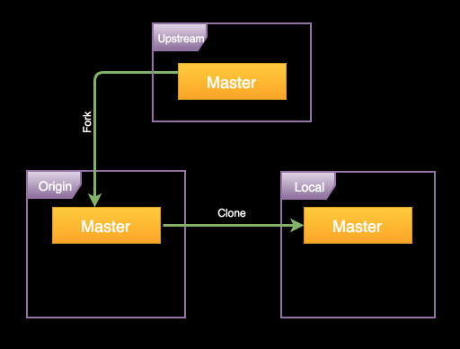
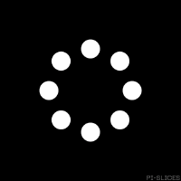
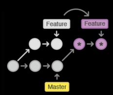
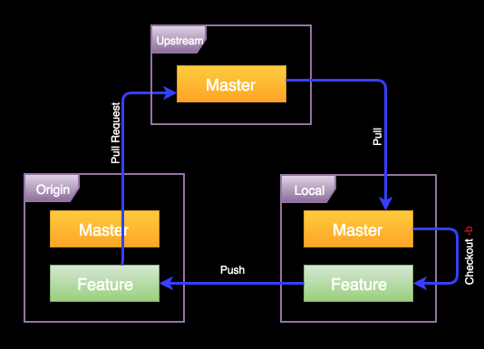
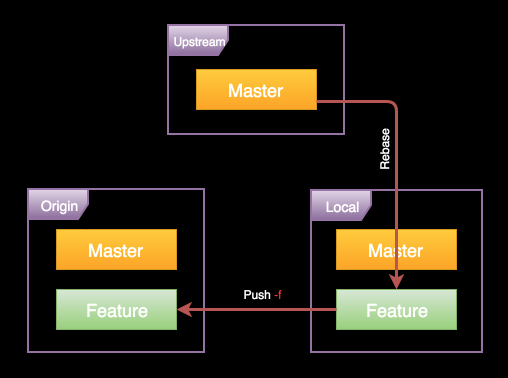

PUT /hackatones/2 HTTP/1.1
Accept: application/json
Accept-Encoding: gzip, deflate
Host: localhost:5000
User-Agent: HTTPie/0.9.3
{
"title": "Хакатон №2"
}
HTTP/1.1 204 No content
Date: Sun, 17 Apr 2016 10:00:00 GMT
X-Powered-By: Express


Сервис «Фотоквест»


Три этапа – три дня
- Инфраструктура, регистрация, авторизация, список квестов
- Создание квестов и комменты
- Прохождение квестов и лайки
1 этап
Договорится о workflow
Наладить инфраструктуру
Регистрация и авторизация
Страница списка квестов
Покрытие тестами и документация
Технический долг
2 этап
Создание квеста: форма + загрузка фоток
Редактирование и удаление квеста
Страница квеста с фотками для игроков
Покрытие тестами и документация
Поиск квестов по названию
Сортировка фоток
Комментарии к фоткам
Самое важное – загрузка и хранение фоток
Технологии
Хранение фоток – Flickr, Cloudinary
Загрузка файлов – Busboy, Multer
Остальные рекомендации в лекциях
В отличии от домашек здесь можно и нужно пользоваться готовыми решениями!
Регламент
8 часов + 🍴
Hackaflow
- Подготовка к разработке
- Начало работы над задачей
- Работа над задачей
- Создание пулла c решением
- Ревью и обновление пулла
- Слияние пулла
1. Подготовка к разработке
git clone %origin_url% git remote add upstream %upstream_url%
1. Подготовка к разработке
2. Начало работы над задачей
git checkout master git pull upstream master git checkout -b %feature_name%
3. Работа над задачей
git add %files% git commit -m "%message%"
4. Создание пулла c решением
git checkout %feature_name% git pull upstream --rebase master  * git add %files% * git rebase --continue git push origin %feature_name%
2-4. Работа над задачей
5. Ревью и обновление пулла
git checkout %feature_name% git add %files% git commit -m "%message%" git pull upstream --rebase master git push -f origin %feature_name%
5. Обновление пулла
6. Слияние пулла
git checkout %feature_name% git pull upstream --rebase master git push -f origin %feature_name%